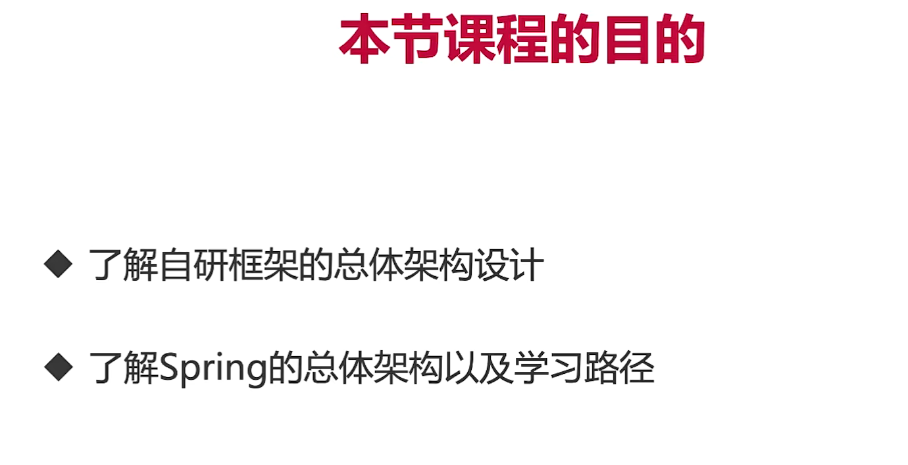
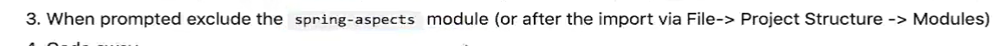

第 1 章 课程导学与概览【为源码学习和框架开发备好足够弹药】
1-1 剑指造轮子，决胜 Spring 源码(更多 IT 教程 1x)
1-2 学前需知(更多 IT 教程 1x)
第 2 章 环境准备【磨刀不误砍柴工】
2-1 Spring 模块梳理

2-2 Spring 源码的下载和编译
java 11 mvn 3.6
进入 spring 官网，点击 project，进入 spring framework，然后点击 github 图标，进入 GitHub，下载对应版本的代码（master 分支下
5.2.0.RELEASE）
下载 zip 包
gradle 为了让没有 gradle 的人也能使用，会生成一个自动安装编译 gradle 的脚本
添加阿里云镜像
找到 allproject
找到 allproject 下的 repository，加上镜像
maven{ url 'https://maven.aliyun.com/nexus/content/groups/public/' }
maven{ url 'https://maven.aliyun.com/nexus/content/repositories/jcenter'}
编译 gradle
# linux
./gradlew :spring-oxm:compileTestJava
# win
gradlew :spring-oxm:compileTestJava
改了一下
导入项目到 idea
如果构建时下载 jar 包失败
排除 aspect 模块，aspect 模块有自己的编译器 ajc，要排除，否则会影响项目运行

2-3 Spring 源码的下载和编译


出bug,弃
2-4 自研框架的整体介绍及雏形搭建


<?xml version="1.0" encoding="UTF-8"?>
<project xmlns="http://maven.apache.org/POM/4.0.0"
xmlns:xsi="http://www.w3.org/2001/XMLSchema-instance"
xsi:schemaLocation="http://maven.apache.org/POM/4.0.0 http://maven.apache.org/xsd/maven-4.0.0.xsd">
<modelVersion>4.0.0</modelVersion>
<groupId>org.malred</groupId>
<artifactId>simpleframework</artifactId>
<version>1.0-SNAPSHOT</version>
<packaging>war</packaging>
<properties>
<maven.compiler.source>11</maven.compiler.source>
<maven.compiler.target>11</maven.compiler.target>
<project.build.sourceEncoding>UTF-8</project.build.sourceEncoding>
</properties>
<dependencies>
<dependency>
<groupId>javax.servlet</groupId>
<artifactId>javax.servlet-api</artifactId>
<version>4.0.1</version>
<!--和compile基本相同,但是打包时会排除-->
<scope>provided</scope>
</dependency>
<dependency>
<groupId>javax.servlet.jsp</groupId>
<artifactId>javax.servlet.jsp-api</artifactId>
<version>2.3.3</version>
<scope>provided</scope>
</dependency>
</dependencies>
<build>
<finalName>simpleframework</finalName>
<pluginManagement>
<plugins>
<plugin>
<groupId>org.apache.maven.plugins</groupId>
<artifactId>maven-compiler-plugin</artifactId>
<version>3.8.1</version>
<configuration>
<source>11</source>
<target>11</target>
</configuration>
</plugin>
<plugin>
<groupId>org.apache.tomcat.maven</groupId>
<artifactId>tomcat7-maven-plugin</artifactId>
<version>2.2</version>
<configuration>
<path>/${project.artifactId}</path>
<!-- <port>8081</port>-->
</configuration>
</plugin>
</plugins>
</pluginManagement>
</build>
</project>
package org.malred;
import javax.servlet.ServletException;
import javax.servlet.annotation.WebServlet;
import javax.servlet.http.HttpServlet;
import javax.servlet.http.HttpServletRequest;
import javax.servlet.http.HttpServletResponse;
import java.io.IOException;
@WebServlet("/hello")
public class HelloServlet extends HttpServlet {
@Override
protected void doGet(HttpServletRequest req, HttpServletResponse resp) throws ServletException, IOException {
String name = "简易框架";
req.setAttribute("name", name);
// 转到hello.jsp
req.getRequestDispatcher("/WEB-INF/jsp/hello.jsp").forward(req, resp);
}
}
webapp/WEB-INF/jsp/hello.jsp
<%@ page pageEncoding="utf-8" %>
Document
Hello!
太牛逼了,${name}
第3章 业务系统架子的构建【自研框架的起源】
3-1 项目业务梳理、数据库和实体类的设计


use test;
CREATE TABLE tb_head_line
(
line_id int(100) NOT NULL AUTO_INCREMENT COMMENT '头条id',
line_name varchar(100) DEFAULT NULL COMMENT '头条名称',
line_link varchar(200) NOT NULL COMMENT '头条链接',
line_img varchar(200) Not Null COMMENT '头条图片地址',
priority int(2) DEFAULT NULL COMMENT '展示的优先级',
enable_status int(2) NOT NULL DEFAULT '0' COMMENT ' 可用状态 ',
`create_.time` datetime DEFAULT NULL COMMENT ' 创建时间 ',
last_edit datetime DEFAULT NULL COMMENT '最近修改时间 ',
PRIMARY KEY (`line_id`)
) ENGINE = InnoDB
AUTO_INCREMENT = 1
DEFAULT CHARSET = utf8;
CREATE TABLE tb_shop_category
(
shop_category_id int(11) NOT null AUTO_INCREMENT COMMENT ' 店铺类别id ',
`shop_category_name` varchar(100) NOT NULL DEFAULT '' COMMENT ' 店铺类别名称 ',
`shop_category_desc` varchar(100) DEFAULT '' COMMENT '店铺类别描述',
`shop_category_img` varchar(200) DEFAULT NULL COMMENT '店铺类别图片地址',
`priority` int(2) NOT NULL DEFAULT '0' COMMENT '店铺类别展示优先级',
`create_time` datetime DEFAULT null COMMENT '创建时间',
`last_edit_time` datetime DEFAULT null COMMENT '最近一次修改时间',
`parent_id` int(11) DEFAULT NULL COMMENT '店铺类别的父类别',
PRIMARY KEY (`shop_category_id`),
KEY `fk_shop_category_self` (`parent_id`),
CONSTRAINT `fk_shop_category_self` foreign key (`parent_id`)
REFERENCES `tb_shop_category` (`shop_category_id`)
) ENGINE = InnoDB
AUTO_INCREMENT = 1
DEFAULT CHARSET = utf8;
3-2 项目依赖配置以及门面模式讲解


package pattern;
public class Client {
public static void main(String[] args) {
LabourContractor contractor = new LabourContractor();
contractor.buildHouse();
}
}
package pattern;
import pattern.subclasses.BrickLayer;
import pattern.subclasses.BrickWorker;
import pattern.subclasses.Mason;
public class LabourContractor {
private Mason worker1 = new Mason();
private BrickWorker worker2 = new BrickWorker();
private BrickLayer worker3 = new BrickLayer();
public void buildHouse() {
worker1.mix();
worker2.carry();
worker3.neat();
}
}
package pattern.subclasses;
public class BrickWorker {
public void carry(){
System.out.println("搬砖ok");
}
}
package pattern.subclasses;
public class Mason {
public void mix(){
System.out.println("和泥ok");
}
}
package pattern.subclasses;
public class BrickLayer {
public void neat(){
System.out.println("水泥+砖,砌墙");
}
}

log4j.properties
### 设置日志的打印级别以及要输出到的地方###
# 优先级从高到低分别是ERROR、WARN、INFO、DEBUG
# 比如在这里定义了INFO级别，则应用程序中所有DEBUG级别的日志信息将不被打印出来
# stdout指代要输出到的地方，可以是不同的自定义名称，也可以有多个，表示输出到多个地方
log4j.rootLogger=debug,stdout
### 输出信息到控制台 ###
log4j.appender.stdout=org.apache.log4j.ConsoleAppender
log4j.appender.stdout.Target=System.out
log4j.appender.stdout.layout=org.apache.log4j.PatternLayout
### 输出日志的格式 ###
#%c：输出日志信息所属的类目，通常就是所在类的全名
#%d：输出日志时间点的日期或时间
#%p：输出日志信息优先级，即DEBUG，INFO，WARN，ERROR，FATAL
#%m：输出代码中指定的消息,产生的日志具体信息
#%n：输出一个回车换行符，Windows平台为"\r\n"，Unix平台为"\n"输出日志信息换行
#这里的示例：com.imooc.HelloServlet 17:48:00 -- INFO -- test
log4j.appender.stdout.layout.ConversionPattern=%c %d{HH:mm:ss} -- %p -- %m%n
<dependency>
<groupId>org.projectlombok</groupId>
<artifactId>lombok</artifactId>
<version>1.18.10</version>
</dependency>
<dependency>
<groupId>org.slf4j</groupId>
<artifactId>slf4j-log4j12</artifactId>
<version>1.7.29</version>
</dependency>
package org.malred.entity.bo;
import lombok.Data;
import java.util.Date;
@Data
public class ShopCategory {
private Long shopCategoryId;
private String shopCategoryName;
private String shopCategoryDesc;
private String shopCategoryImg;
private Integer priority;
private Date createTime;
private Date lastEditTime;
private ShopCategory parent;
}
package org.malred.entity.bo;
import lombok.Data;
import java.util.Date;
@Data
// bo 业务实体类
public class HeadLine {
private Long lineId;
private String lineName;
private String lineLink;
private String lineImg;
private Integer priority;
private Integer enableStatus;
private Date createTime;
private Date lastEditTime;
}
package org.malred;
import lombok.extern.slf4j.Slf4j;
import org.malred.entity.bo.HeadLine;
import org.slf4j.Logger;
import org.slf4j.LoggerFactory;
import javax.servlet.ServletException;
import javax.servlet.annotation.WebServlet;
import javax.servlet.http.HttpServlet;
import javax.servlet.http.HttpServletRequest;
import javax.servlet.http.HttpServletResponse;
import java.io.IOException;
@Slf4j
@WebServlet("/hello")
public class HelloServlet extends HttpServlet {
// Logger log = LoggerFactory.getLogger(HelloServlet.class);
@Override
protected void doGet(HttpServletRequest req, HttpServletResponse resp) throws ServletException, IOException {
String name = "简易框架";
log.debug("name is " + name);
req.setAttribute("name", name);
// 转到hello.jsp
req.getRequestDispatcher("/WEB-INF/jsp/hello.jsp").forward(req, resp);
}
}
3-4 泛型讲解


package demo.generic;
import java.util.LinkedList;
import java.util.List;
public class GenericDemo {
// public static void handleMember(GenericClassExample<Integer> example) {
// public static void handleMember(GenericClassExample<?> example) {
// public static void handleMember(GenericClassExample<? extends Number> example) {
public static void handleMember(GenericClassExample<? super Integer> example) {
// Integer res = (Integer) example.getMember() + 111;
Integer res = (Integer) example.getMember() + 111;
System.out.println(res);
}
public static void main(String[] args) {
List<String> linkedList = new LinkedList<>();
linkedList.add("words");
// linkedList.add(1);
for (int i = 0; i < linkedList.size(); i++) {
// String item = (String) linkedList.get(i);
String item = linkedList.get(i);
System.out.println(item);
}
GenericClassExample<String> stringExample =
new GenericClassExample<>("abc");
GenericClassExample<Number> intExample =
new GenericClassExample<Number>(123);
System.out.println(stringExample.getMember().getClass());
System.out.println(intExample.getMember().getClass());
System.out.println(stringExample.handleSome("faef"));
System.out.println(intExample.handleSome(123));
handleMember(intExample);
Integer[] ints = new Integer[]{1, 2, 3, 4, 5, 6};
stringExample.printArr(ints);
Double[] doubles = new Double[]{1.1, 2.2, 3.3, 4.4, 5.5};
stringExample.printArr(doubles);
String[] strings = new String[]{"1", "2", "3"};
stringExample.printArr(strings);
}
}
package demo.generic;
public interface GenericFactory<T, N> {
T nextObject();
N nextNumber();
}
package demo.generic;
import java.util.Random;
public class RobotFactory implements GenericFactory<String, Integer> {
private String[] stringRobot = new String[]{"hello", "hi"};
private Integer[] integerRobot = new Integer[]{111, 100};
public static void main(String[] args) {
GenericFactory<String, Integer> factory = new RobotFactory();
System.out.println(factory.nextNumber());
System.out.println(factory.nextObject());
}
@Override
public String nextObject() {
Random random = new Random();
// [0,size)
return stringRobot[random.nextInt(stringRobot.length)];
}
@Override
public Integer nextNumber() {
Random random = new Random();
return integerRobot[random.nextInt(integerRobot.length)];
}
}
package demo.generic;
public class GenericFactoryImpl<T,N> implements GenericFactory<T,N>{
@Override
public T nextObject() {
return null;
}
@Override
public N nextNumber() {
return null;
}
}
package demo.generic;
import lombok.Data;
@Data
public class GenericClassExample<T> {
// 类型为T,T由外部指定
private T member;
public GenericClassExample(T member) {
this.member = member;
}
// 泛型方法
public static <E> void printArr(E[] input) {
for (E e : input) {
System.out.printf("%s", e);
System.out.printf(" ");
}
System.out.println();
}
public T handleSome(T target) {
return target;
}
}
3-6 Service层代码架子的搭建
package org.malred.service.combine.impl;
import org.malred.entity.bo.HeadLine;
import org.malred.entity.bo.ShopCategory;
import org.malred.entity.dto.MainPageInfoDTO;
import org.malred.entity.dto.Result;
import org.malred.service.combine.HeadLineShopCategoryCombineService;
import org.malred.service.solo.HeadLineService;
import org.malred.service.solo.ShopCategoryService;
import java.util.List;
public class HeadLineShopCategoryCombineServiceImpl implements HeadLineShopCategoryCombineService {
private HeadLineService headLineService;
private ShopCategoryService shopCategoryService;
@Override
public Result<MainPageInfoDTO> getMainPageInfo() {
// 1.获取头条列表
HeadLine headLineCondition = new HeadLine();
headLineCondition.setEnableStatus(1);
Result<List<HeadLine>> headLineResult = headLineService.queryHeadLine(headLineCondition, 1, 4);
// 2.获取店铺类别列表
ShopCategory shopCategoryCondition = new ShopCategory();
Result<List<ShopCategory>> shopCategoryResult = shopCategoryService.queryShopCategory(shopCategoryCondition, 1, 100);
// 3.合并两者并返回
Result<MainPageInfoDTO> result = mergeMainPageInfoResult(headLineResult, shopCategoryResult);
return result;
}
private Result<MainPageInfoDTO> mergeMainPageInfoResult(
Result<List<HeadLine>> headLineResult, Result<List<ShopCategory>> shopCategoryResult
) {
return null;
}
}
package org.malred.service.combine;
import org.malred.entity.dto.MainPageInfoDTO;
import org.malred.entity.dto.Result;
public interface HeadLineShopCategoryCombineService {
Result<MainPageInfoDTO> getMainPageInfo();
}
package org.malred.service.solo.impl;
import org.malred.entity.bo.HeadLine;
import org.malred.entity.dto.Result;
import org.malred.service.solo.HeadLineService;
import java.util.List;
public class HeadLineServiceImpl implements HeadLineService {
@Override
public Result<Boolean> addHeadLine(HeadLine headLine) {
return null;
}
@Override
public Result<Boolean> removeHeadLine(int headLineId) {
return null;
}
@Override
public Result<Boolean> modifyHeadLine(HeadLine headLine) {
return null;
}
@Override
public Result<HeadLine> queryHeadLineById(int headLineId) {
return null;
}
@Override
public Result<List<HeadLine>> queryHeadLine(HeadLine headLineCondition, int pageIdx, int pageSize) {
return null;
}
}
package org.malred.service.solo;
import org.malred.entity.bo.HeadLine;
import org.malred.entity.bo.ShopCategory;
import org.malred.entity.dto.Result;
import java.util.List;
public interface ShopCategoryService {
Result<Boolean> addShopCategory(ShopCategory shopCategory);
Result<Boolean> removeShopCategory(int shopCategoryId);
Result<Boolean> modifyShopCategory(ShopCategory shopCategory);
Result<ShopCategory> queryShopCategoryById(int shopCategoryId);
Result<List<ShopCategory>> queryShopCategory(ShopCategory shopCategory, int pageIdx, int pageSize);
}
package org.malred.entity.dto;
import lombok.Data;
@Data
public class Result<T> {
// 请求结果状态码
private int code;
private String msg;
private T data;
}
package org.malred.entity.dto;
import lombok.Data;
import org.malred.entity.bo.HeadLine;
import org.malred.entity.bo.ShopCategory;
import java.util.List;
@Data
public class MainPageInfoDTO {
private List<HeadLine> headLineList;
private List<ShopCategory> shopCategoryList;
}
package org.malred.service.solo.impl;
import org.malred.entity.bo.ShopCategory;
import org.malred.entity.dto.Result;
import org.malred.service.solo.ShopCategoryService;
import java.util.List;
public class ShopCategoryServiceImpl implements ShopCategoryService {
@Override
public Result<Boolean> addShopCategory(ShopCategory shopCategory) {
return null;
}
@Override
public Result<Boolean> removeShopCategory(int shopCategoryId) {
return null;
}
@Override
public Result<Boolean> modifyShopCategory(ShopCategory shopCategory) {
return null;
}
@Override
public Result<ShopCategory> queryShopCategoryById(int shopCategoryId) {
return null;
}
@Override
public Result<List<ShopCategory>> queryShopCategory(ShopCategory shopCategory, int pageIdx, int pageSize) {
return null;
}
}
package org.malred.service.solo;
import org.malred.entity.bo.HeadLine;
import org.malred.entity.dto.Result;
import java.util.List;
public interface HeadLineService {
Result<Boolean> addHeadLine(HeadLine headLine);
Result<Boolean> removeHeadLine(int headLineId);
Result<Boolean> modifyHeadLine(HeadLine headLine);
Result<HeadLine> queryHeadLineById(int headLineId);
Result<List<HeadLine>> queryHeadLine(HeadLine headLineCondition, int pageIdx, int pageSize);
}
3-7 Controller层代码架子的搭建
第4章 自研框架IOC实现前奏【从项目开发到框架开发的转换】
直接跳过项目部分,写框架就行,因为部分视频缺失
4-1 尝试引入简单工厂模式_慕课网
新增鼠标只需要添加实现类,不需要修改之前的接口定义和其他实现类,而工厂类却要修改switch


package pattern.factory.simple;
import pattern.factory.entity.DellMouse;
import pattern.factory.entity.HpMouse;
import pattern.factory.entity.Mouse;
public class MouseFactory {
public static Mouse createMouse(int type){
switch (type){
case 0:
return new DellMouse();
case 1:
return new HpMouse();
default:
return new DellMouse();
}
}
public static void main(String[] args) {
Mouse m=MouseFactory.createMouse(1);
m.sayHi();
}
}
package pattern.factory.entity;
public class HpMouse implements Mouse {
@Override
public void sayHi() {
System.out.println("惠普鼠标");
}
}
package pattern.factory.entity;
public class DellMouse implements Mouse{
@Override
public void sayHi() {
System.out.println("戴尔鼠标");
}
}
package pattern.factory.entity;
public interface Mouse {
void sayHi();
}
4-2 尝试引入工厂方法模式


package pattern.factory.method;
import pattern.factory.entity.Mouse;
public interface MouseFactory {
Mouse createMouse();
}
package pattern.factory.method;
import pattern.factory.entity.HpMouse;
import pattern.factory.entity.Mouse;
public class HpMouseFactory implements MouseFactory {
@Override
public Mouse createMouse() {
return new HpMouse();
}
}
package pattern.factory.method;
import pattern.factory.entity.DellMouse;
import pattern.factory.entity.Mouse;
public class DellMouseFactory implements MouseFactory {
@Override
public Mouse createMouse() {
return new DellMouse();
}
}
package pattern.factory.method;
public class demo {
public static void main(String[] args) {
MouseFactory factory = new DellMouseFactory();
factory.createMouse().sayHi();
}
}


4-3 尝试引入抽象工厂模式


package pattern.factory.entity;
public interface Keyboard {
void sayHello();
}
package pattern.factory.entity;
public class DellKeyboard implements Keyboard {
@Override
public void sayHello() {
System.out.println("戴尔键盘");
}
}
package pattern.factory.entity;
public class HpKeyboard implements Keyboard {
@Override
public void sayHello() {
System.out.println("惠普键盘");
}
}
package pattern.factory.abstractf;
import pattern.factory.entity.Keyboard;
import pattern.factory.entity.Mouse;
public interface ComputerFactory {
Mouse createMouse();
Keyboard createKeyboard();
}
package pattern.factory.abstractf;
import pattern.factory.entity.DellKeyboard;
import pattern.factory.entity.DellMouse;
import pattern.factory.entity.Keyboard;
import pattern.factory.entity.Mouse;
public class DellComputerFactory implements ComputerFactory {
@Override
public Mouse createMouse() {
return new DellMouse();
}
@Override
public Keyboard createKeyboard() {
return new DellKeyboard();
}
}
package pattern.factory.abstractf;
import pattern.factory.entity.HpKeyboard;
import pattern.factory.entity.HpMouse;
import pattern.factory.entity.Keyboard;
import pattern.factory.entity.Mouse;
public class HpComputerFactory implements ComputerFactory {
@Override
public Mouse createMouse() {
return new HpMouse();
}
@Override
public Keyboard createKeyboard() {
return new HpKeyboard();
}
}
package pattern.factory.abstractf;
import pattern.factory.entity.Keyboard;
import pattern.factory.entity.Mouse;
public class demo {
public static void main(String[] args) {
ComputerFactory cf = new HpComputerFactory();
Mouse mouse = cf.createMouse();
Keyboard keyboard = cf.createKeyboard();
mouse.sayHi();
keyboard.sayHello();
}
}
4-4 利器之反射


package reflect;
public class ReflectTarget {
public static void main(String[] args) throws ClassNotFoundException {
// 第一种方式获取class对象
ReflectTarget reflectTarget = new ReflectTarget();
Class aClass1 = reflectTarget.getClass();
System.out.println(aClass1.getName());
// 方式2
Class aClass2 = ReflectTarget.class;
System.out.println(aClass2.getName());
System.out.println(aClass1==aClass2);
// 方式3
Class<?> aClass3 = Class.forName("reflect.ReflectTarget");
System.out.println(aClass3.getName());
System.out.println(aClass1==aClass3);
System.out.println(aClass2==aClass3);
}
}
4-5 反射之获取并操作构造函数

package reflect;
public class ReflectTarget {
// 默认构造函数(包可见)
ReflectTarget(String str) {
System.out.println("default " + str);
}
// 无参
public ReflectTarget() {
System.out.println("无参");
}
// 有参
public ReflectTarget(char name) {
System.out.println("有参 " + name);
}
// 有多个参数
public ReflectTarget(String name, int index) {
System.out.println("有参 name: " + name + ",idx: " + index);
}
// 保护的
protected ReflectTarget(boolean n) {
System.out.println("保护 " + n);
}
// 私有
private ReflectTarget(int idx) {
System.out.println("私有 " + idx);
}
}
package reflect;
import java.lang.reflect.Constructor;
import java.lang.reflect.InvocationTargetException;
public class ConstructorCollector {
public static void main(String[] args) throws ClassNotFoundException, NoSuchMethodException, InvocationTargetException, InstantiationException, IllegalAccessException {
Class clazz = Class.forName("reflect.ReflectTarget");
System.out.println("获取所有公共构造方法");
Constructor[] constructors = clazz.getConstructors();
for (Constructor c : constructors) {
System.out.println(c);
}
System.out.println("获取所有构造方法(私有|保护|默认|公共)");
constructors = clazz.getDeclaredConstructors();
for (Constructor c : constructors) {
System.out.println(c);
}
// 获取单个带参数的构造方法
System.out.println("获取公有,带两个参数的");
Constructor con = clazz.getConstructor(String.class, int.class);
System.out.println(con);
System.out.println("获取私有的");
con = clazz.getDeclaredConstructor(int.class);
System.out.println(con);
con.setAccessible(true);// 可访问私有
ReflectTarget o = (ReflectTarget) con.newInstance(1);
}
}
4-6 反射之获取并操作成员变量


package reflect;
public class ReflectTarget extends ReflectTargetOrigin {
// 字段
public String name;
protected int index;
char type;
private String targetInfo;
@Override
public String toString() {
return "ReflectTarget{" +
"name='" + name + '\'' +
", index=" + index +
", type=" + type +
", targetInfo='" + targetInfo + '\'' +
'}';
}
}
package reflect;
public class ReflectTargetOrigin {
public String publicMember = "public";
protected String protectedMember = "protected";
String defaultMember = "default";
private String privateMember = "private";
}
package reflect;
import java.lang.reflect.Field;
public class FieldCollector {
public static void main(String[] args) throws Exception {
Class<?> aClass = Class.forName("reflect.ReflectTarget");
System.out.println("获取所有公有字段");
// 可以获取公有的继承来的字段
Field[] fields = aClass.getFields();
for (Field f : fields) {
System.out.println(f);
}
System.out.println("获取所有字段");
// 获取不到继承的字段
fields = aClass.getDeclaredFields();
for (Field f : fields) {
System.out.println(f);
}
// 获取单个特定公有
System.out.println("获取公有");
Field f = aClass.getField("name");
System.out.println(f);
ReflectTarget o = (ReflectTarget) aClass.getConstructor().newInstance();
f.set(o, "reflect1");
System.out.println(o.name);
// 获取单个私有
f = aClass.getDeclaredField("targetInfo");
f.setAccessible(true);
System.out.println(f);
f.set(o, "target1");
System.out.println(o);
}
}
4-7 反射之获取并操作成员方法

package reflect;
import java.lang.reflect.Method;
public class MethodCollector {
public static void main(String[] args) throws Exception {
Class<?> aClass = Class.forName("reflect.ReflectTarget");
System.out.println("获取所有公有(包括父类和object)");
Method[] methods = aClass.getMethods();
for (Method m : methods) {
System.out.println(m);
}
System.out.println("获取所有方法,包括私有,不包括父类");
methods = aClass.getDeclaredMethods();
for (Method m : methods) {
System.out.println(m);
}
// 获取单个公有方法
Object o = aClass.getConstructor().newInstance();
System.out.println("公有 show1");
Method m = aClass.getMethod("show1", String.class);
System.out.println(m);
m.invoke(o, "反射1号");
System.out.println("私有show4");
m = aClass.getDeclaredMethod("show4", int.class);
m.setAccessible(true);
String res = (String) m.invoke(o, 20);
System.out.println(res);
}
}
package reflect;
public class ReflectTarget extends ReflectTargetOrigin {
// 成员方法
public void show1(String s) {
System.out.println("公有 string参数show1(): s=" + s);
}
protected void show2() {
System.out.println("受保护无参 show2()");
}
void show3() {
System.out.println("默认无参 show3()");
}
private String show4(int idx) {
System.out.println("私有带返回值 show4() idx=" + idx);
return "show4result";
}
}